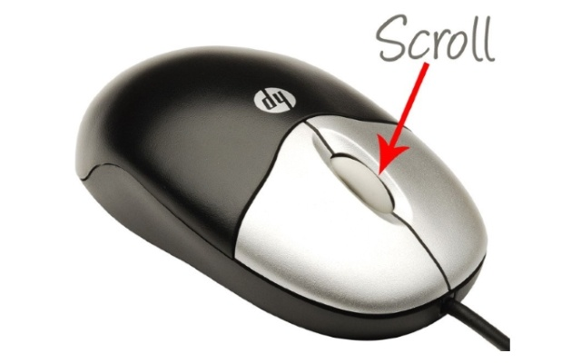
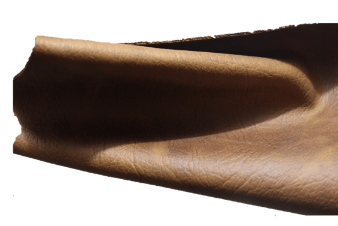
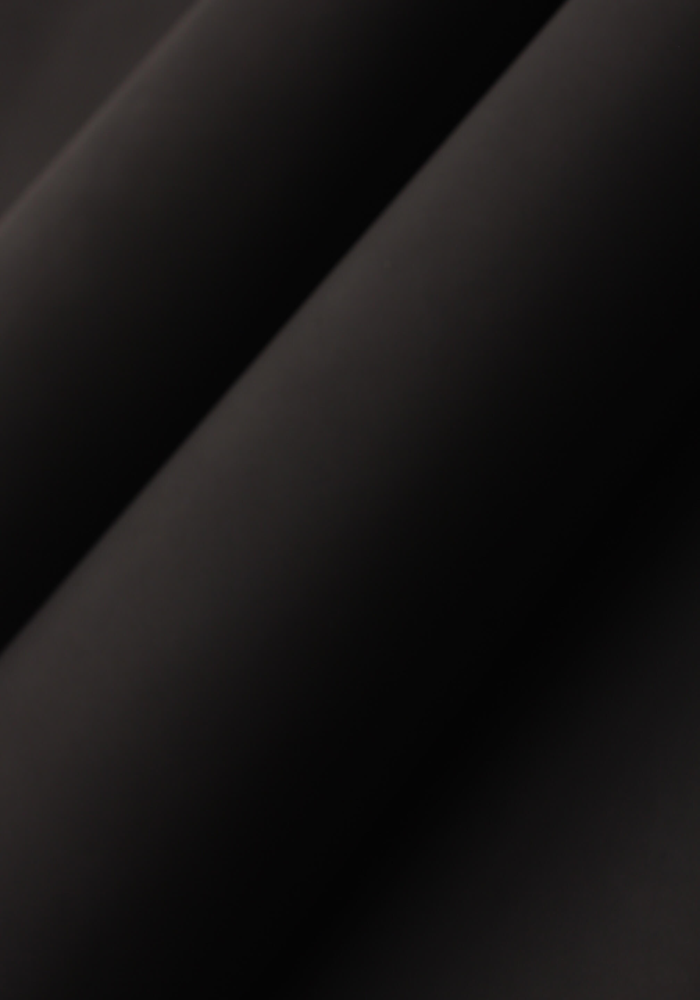
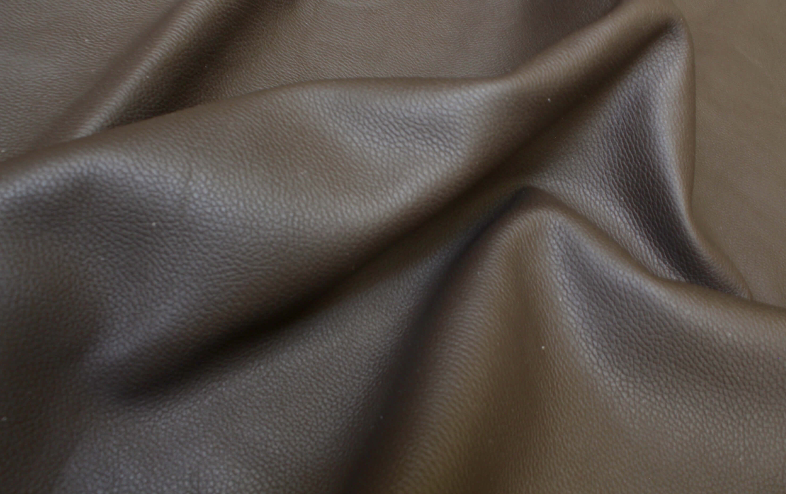
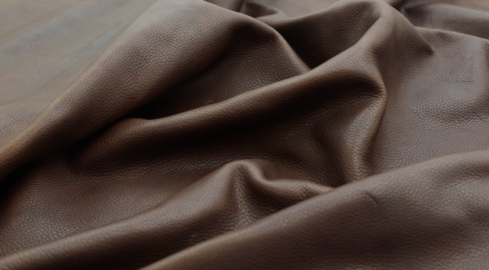
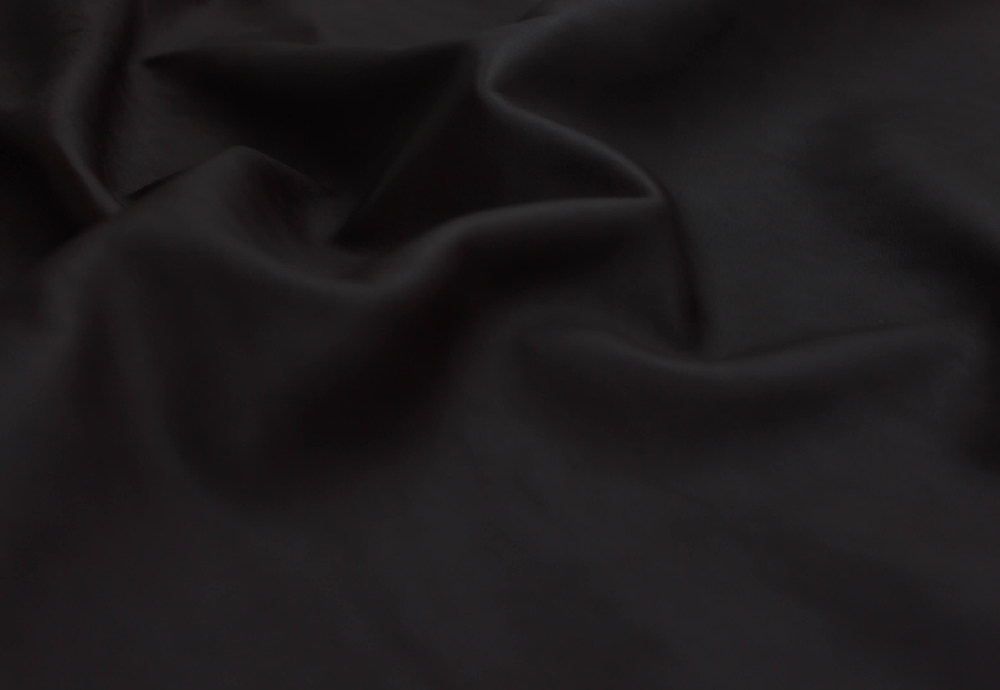
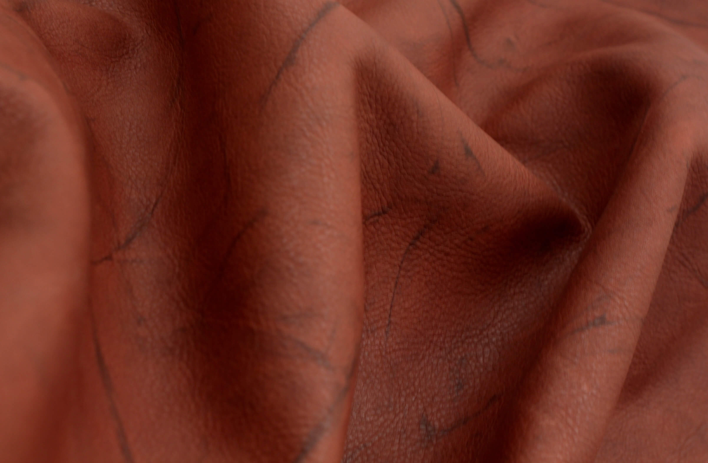

Quienes Somos
Certificaciones
Servicios
Productos
Instalaciones
Contacto
Productos
nuestros productos producidos con la mejor calidad
Zoom
/
a los productos usando el
scroll
wheel del raton(mouse)

Todos
barcelona
bufalino
atando
corzo
bull fight
crazy
napa
nubuck
old river
pull up
napoles
new York
floater
sinatra
toscano
terremoto
Muestras Barcelona
Muestra Bufalino

Muestra Bufalino

Muestras Atanado
Muestras Corzo
Muestras Bull Fight
Muestras Crazy Horse Sport
Muestras Crazy Horse
Muestras Napa Gama
Muestras Napa Gama
Muestras Nubuck
Muestras Nubuck Cuadros
Muestras Nubuck Gama
Muestras Nubuck Gama
Muestras Old River
Muestras Pull Up
Muestras Napoles Negro
Muestras New York

Muestras Floater

Muestras Sinatra

Muestras Toscano

Muestras Terremoto
© Copyright CURTIEMBRES DE MEXICO S.A. DE C.V 2016. website made by
TAMO